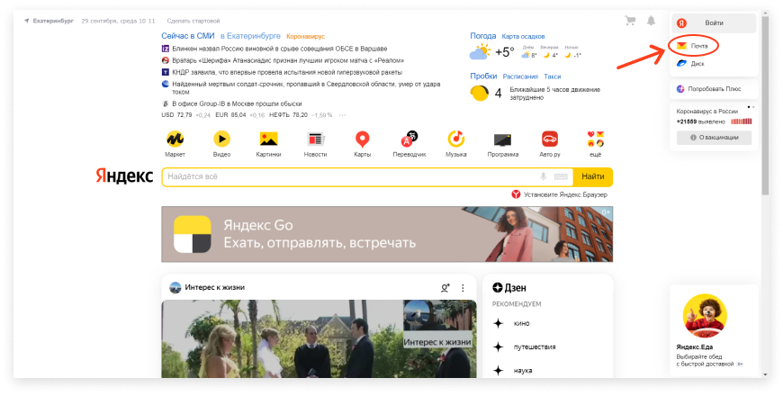
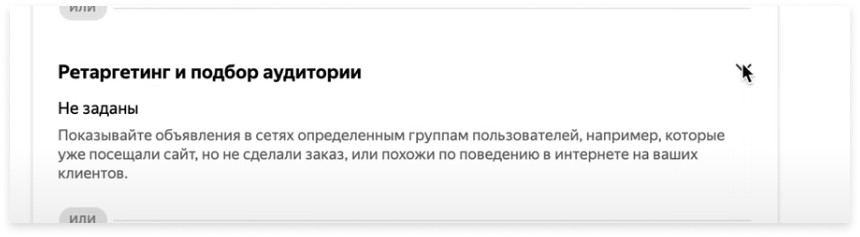

Настройка контекстной рекламы Яндекс Директ в Петропавловск камчатском

- Оставьте свой номер телефона и получите:
- Расчет стоимости настройки Яндекс Директ
- Промокод на сумму до 20 000 руб.
- Узнаете примерную стоимость клика, заявки, звонка и заказа с рекламы Яндекс Директ
Опыт настройки рекламы Яндекс Директ более 10 лет.
Имеем успешный опыт работы с более чем 100 разными бизнесами
Большинство клиентов получают свои заказы в первые дни после запуска

Делим риски с вами. Часть оплаты берем после получения первых результатов

4 преимущества контекстной рекламы Яндекс Директ в Петропавловск камчатском
Высокая результативность
Рекламные объявления показываются только целевым клиентам, которые ищут ваши услуги или товары. Реклама Яндекс Директ не показывается нецелевой аудитории.
Низкая стоимость
Контекстная реклама Яндекс Директ во многих случаях намного выгоднее и эффективнее наружной рекламы, рекламы в прессе, по ТВ, радио и др.

Быстрый старт
Чтобы заинтересованные клиенты уведили вашу рекламу Яндекс Директ, нам понадобится 7 дней чтобы подготовить и запустить эффективную рекламную кампанию.

Прозрачная отчетность
Рекламный кабинет Яндекс Директ в комплексе с Яндекс Метрика помогут вам отследить откуда приходят клиенты, сколько стоит 1 переход и какая кампания приносит больше продаж и заявок
В чем преимущества работать с нами, а не с конкурентами?
Большинство агентств
Неопытные специалисты
Задачи по настройке выполняются начинающими специалистами, т.к. их работа обходится выгоднее для агенства.
Лишние затраты
Продают ненужные услуги, которые чаще всего вообще не относятся к настройке рекламы Яндекс Директ.
Нет фокуса на вашем проекте
На ваш проект не выделяется отдельный специалист, обычно один человек работает одновременнно над 10 - 20 проектами.
Нет прямой и оперативной связи
Нет возможности напрямую общаться со специалистом. Обычно это происходит через менеджера который не знает все тонкости процесса настройки рекламы Яндекс Директ.
Передача фрилансерам
Часто агентства передают фрилансерам задачи по настройке Яндекс Директ. Таким образом вы переплачиваете в разы и не имеете должного контроля выполнения.
Наше агентство
Команда профессионалов
У нас работают опытные настройщики Яндекс Директ. Мы принимаем на работу специалистов с опытом от 10 лет.
Работаем на результат
Для нас важно приводить проекты к результатам, поэтому работаем только над тем, что принесет результат.
Максимальное погружение в ваш проект
Для качественного оказания услуги мы не загружаем сотрудников, чтобы они могли детально прорабатывать рекламные кампании.
Прямая связь со специалистом
Есть возможность оперативного общения с директологом. Таким образом, вы сможете обсудить все тонкости настройки рекламной кампании.
Штатные специалисты
Над вашим проектом будет работать наш сотрудник, и регулярно предоставлять отчет о работе и результатах рекламной кампании Яндекс Директ.
Ваша реклама Яндекс Директ работает плохо?
Мы бесплатно проведем аудит рекламного кабинета и найдем проблему!
Заполните форму и наш специалист по настройке Яндекс Директ с вами свяжется для дальнейшей консультации!
Как мы добиваемся максимального результата от рекламы Яндекс Директ в Петропавловск камчатском?
Мы выполняем 10 важных этапов работы, на которые большинство специалистов не уделяют время.
-
01.
Анализ конкурентов
Анализ сайтов конкурентов необходим для того, чтобы понять какие у конкурентов цены, преимущества и предложения. Это поможет сформулировать, что именно повысит ваши продажи с помощью рекламы Яндекс Директ.
-
03.
Анализ релевантности
Такой анализ проводится для того, чтобы понять целесообразность работы рекламной кампании на определенный набор ключевых фраз. Наименее эффективные фразы исключаются, для сокращения затрат рекламного бюджета.
-
05.
Анализ вашего сайта
На данном этапе важно выявить все слабые стороны сайта, если они есть. После проведения анализа мы составим техническое задание для ваших программистов и дизайнеров. Если у вас нет специалистов, которые внесут правки на сайт, то мы отдельно оценим стоимость правок и выполним работы сами.
-
07.
Написание объявлений
На отобранную группу ключевых поисковых фраз будет создано сразу несколько рекламных объявлений. Это важно для получения максимально релевантности ключевых слов. Чем релевантнее объявление, тем ниже цена за 1 переход на ваш сайт.
-
09.
Оптимизация
Исходя из результатов тестовой недели, мы оптимизируем рекламную кампанию, проводим коррекцию набора ключевых слов, отключаем неэффективные рекламные кампании и добавляем расширения.
-
02.
Сбор ключевых фраз
На этом этапе собираются ключевые слова разных уровней - холодные, теплые и горячие. Это помогает оценить спрос на ваши услуги. При высоком уровне спроса, ваш сайт будет выдаваться в наиболее эффективном месте.
-
04.
Согласование фраз
Перед запуском рекламы Яндекс Директ, весь список поисковых фраз согласуется с вами. Лучше запускать рекламу Яндекс Директ на теплые и горячие ключевые слова. Тогда конверсия будет выше, а звонков и продаж больше.
-
06.
Анализ объявлений
Перед созданием рекламного объявления, необходимо детально изучить объявления ваших конкурентов. Таким образом получится выявить наиболее продающие преимущества и на что лучше всего сделать акцент в вашем объявлении.
-
08.
Запуск Яндекс.Директ
После того, как мы подготовили ваш сайт, набор ключевых слов и написали объявления, можно приступать к запуску рекламы Яндекс Директ. Первая неделя работы рекламы Яндекс Директ считается тестовой. Нам важно проанализировать на сколько реклама эффективна и окупаема.
-
10.
Ведение кампании
Все то время, пока рекламная компания работает, мы глубже анализируем результаты работы рекламы и оптимизируем в реальном времени. Сопровождение рекламной кампании очень важно, т.к. можно достигнуть максимальной эффективности и окупаемости.
-
01.
Анализ конкурентов
Анализ сайтов конкурентов необходим для того, чтобы понять какие у конкурентов цены, преимущества и предложения. Это поможет сформулировать, что именно повысит ваши продажи с помощью рекламы Яндекс Директ.
-
02.
Сбор ключевых фраз
На этом этапе собираются ключевые слова разных уровней - холодные, теплые и горячие. Это помогает оценить спрос на ваши услуги. При высоком уровне спроса, ваш сайт будет выдаваться в наиболее эффективном месте.
-
03.
Анализ релевантности
Такой анализ проводится для того, чтобы понять целесообразность работы рекламной кампании на определенный набор ключевых фраз. Наименее эффективные фразы исключаются, для сокращения затрат рекламного бюджета.
-
04.
Согласование фраз
Перед запуском рекламы Яндекс Директ, весь список поисковых фраз согласуется с вами. Лучше запускать рекламу Яндекс Директ на теплые и горячие ключевые слова. Тогда конверсия будет выше, а звонков и продаж больше.
-
05.
Анализ вашего сайта
На данном этапе важно выявить все слабые стороны сайта, если они есть. После проведения анализа мы составим техническое задание для ваших программистов и дизайнеров. Если у вас нет специалистов, которые внесут правки на сайт, то мы отдельно оценим стоимость правок и выполним работы сами.
-
06.
Анализ объявлений
Перед созданием рекламного объявления, необходимо детально изучить объявления ваших конкурентов. Таким образом получится выявить наиболее продающие преимущества и на что лучше всего сделать акцент в вашем объявлении.
-
07.
Написание объявлений
На отобранную группу ключевых поисковых фраз будет создано сразу несколько рекламных объявлений. Это важно для получения максимально релевантности ключевых слов. Чем релевантнее объявление, тем ниже цена за 1 переход на ваш сайт.
-
08.
Запуск Яндекс.Директ
После того, как мы подготовили ваш сайт, набор ключевых слов и написали объявления, можно приступать к запуску рекламы Яндекс Директ. Первая неделя работы рекламы Яндекс Директ считается тестовой. Нам важно проанализировать на сколько реклама эффективна и окупаема.
-
09.
Оптимизация
Исходя из результатов тестовой недели, мы оптимизируем рекламную кампанию, проводим коррекцию набора ключевых слов, отключаем неэффективные рекламные кампании и добавляем расширения.
-
10.
Ведение кампании
Все то время, пока рекламная компания работает, мы глубже анализируем результаты работы рекламы и оптимизируем в реальном времени. Сопровождение рекламной кампании очень важно, т.к. можно достигнуть максимальной эффективности и окупаемости.

Ваш сайт плохо продает? Много заходов, но мало заказов?
Мы бесплатно проведем аудит вашего сайта и выявим проблему!
Оставьте заявку и наш менеджер перезвонит вам в ближайшее время!
Результаты наших клиентов от рекламы через Яндекс Директ
Кейс №1 москва.ветерок-2.рф
Настроили рекламные кампании Яндекс Директ для увеличения продаж сушилок для овощей и фруктов.

- Результаты:
- 47 руб. стоимость одного звонка или заявки клиента (лида)
- 20 обращений в день
Результаты рекламы Яндекс Директ в заявках:

Кейс №2 potolkow.com
Настроили рекламные кампании Яндекс Директ для увеличения продаж услуг по установке потолков и узнаваемости бренда.
- Результаты:
- 312 руб. стоимость одного звонка или заявки клиента (лида)
- 15 обращений в день
Результаты рекламы Яндекс Директ в заявках:

Настраивали Яндекс Директ более чем для 100 разных бизнесов
-
Настройка Яндекс Директ для сайта рекламного агентства в Петропавловск камчатском
-
Настройка Яндекс Директ для медицинского сайта в Петропавловск камчатском
-
Настройка Яндекс Директ для сайта агентства недвижимости в Петропавловск камчатском
-
Настройка Яндекс Директ для сайта seo оптимизации в Петропавловск камчатском
-
Настройка Яндекс Директ для сайта веб студии в Петропавловск камчатском
-
Настройка Яндекс Директ для сайта управления ПО в Петропавловск камчатском
-
Настройка Яндекс Директ для сайта недвижимости в Петропавловск камчатском
-
Настройка Яндекс Директ для строительного сайта в Петропавловск камчатском
-
Настройка Яндекс Директ для сайта питомника в Петропавловск камчатском
-
Настройка Яндекс Директ для интернет магазина бытовой техники в Петропавловск камчатском
-
Настройка Яндекс Директ для сайта клиники в Петропавловск камчатском
-
Настройка Яндекс Директ для интернет магазина косметики в Петропавловск камчатском
-
Настройка Яндекс Директ для интернет магазина мебели в Петропавловск камчатском
-
Настройка Яндекс Директ для юридического сайта в Петропавловск камчатском
-
Настройка Яндекс Директ для сайта новостей в Петропавловск камчатском
-
Настройка Яндекс Директ для магазина строительных материалов в Петропавловск камчатском
-
Настройка Яндекс Директ для интернет магазина игрушек по в Петропавловск камчатском
-
Настройка Яндекс Директ для сайта объявлений в Петропавловск камчатском
-
Настройка Яндекс Директ для сайта математики в Петропавловск камчатском
-
Настройка Яндекс Директ для сайта предприятия в Петропавловск камчатском
-
Настройка Яндекс Директ для сайта медицинских услуг в Петропавловск камчатском
-
Настройка Яндекс Директ для сайта анкетника в Петропавловск камчатском
-
Настройка Яндекс Директ для сайта по выкупу авто в Петропавловск камчатском
-
Настройка Яндекс Директ для интернет магазина женской одежды в Петропавловск камчатском
-
Настройка Яндекс Директ для бухгалтерского сайта в Петропавловск камчатском
-
Настройка Яндекс Директ для сайта аналитики в Петропавловск камчатском
-
Настройка Яндекс Директ для ювелирного интернет магазина в Петропавловск камчатском
-
Настройка Яндекс Директ для сайта гостиницы в Петропавловск камчатском
-
Настройка Яндекс Директ для сайта жилого комплекса в Петропавловск камчатском
-
Настройка Яндекс Директ для сайта знакомств в Петропавловск камчатском
-
Настройка Яндекс Директ для сайта бренда в Петропавловск камчатском
-
Настройка Яндекс Директ для сайта салона красоты в Петропавловск камчатском
-
Настройка Яндекс Директ для сайта автозапчастей в Петропавловск камчатском
-
Настройка Яндекс Директ для сайта услуг интернета в Петропавловск камчатском
-
Настройка Яндекс Директ для сайта продуктов авто в Петропавловск камчатском
-
Настройка Яндекс Директ для сайта авто в Петропавловск камчатском
-
Настройка Яндекс Директ для сайта автосервиса в Петропавловск камчатском
-
Настройка Яндекс Директ для сайта жалюзи в Петропавловск камчатском
-
Настройка Яндекс Директ для сайта цветов в Петропавловск камчатском
-
Настройка Яндекс Директ для интернет магазина детской одежды в Петропавловск камчатском
-
Настройка Яндекс Директ для сайта продукции в Петропавловск камчатском
-
Настройка Яндекс Директ для сайта банка в Петропавловск камчатском
-
Настройка Яндекс Директ для сайта b2b в Петропавловск камчатском
-
Настройка Яндекс Директ для сайта адвоката в Петропавловск камчатском
-
Настройка Яндекс Директ для сайта агрегатора в Петропавловск камчатском
-
Настройка Яндекс Директ для сайта услуг интернета в Петропавловск камчатском
-
Настройка Яндекс Директ для сайта данных в Петропавловск камчатском
-
Настройка Яндекс Директ для сайта библиотеки в Петропавловск камчатском
-
Настройка Яндекс Директ для сайта мероприятия в Петропавловск камчатском
-
Настройка Яндекс Директ для сайта школы в Петропавловск камчатском
-
Настройка Яндекс Директ для сайта стоматологии в Петропавловск камчатском
-
Настройка Яндекс Директ для интернет магазина тканей в Петропавловск камчатском
-
Настройка Яндекс Директ для интернет магазина сувениров в Петропавловск камчатском
-
Настройка Яндекс Директ для сайта сми в Петропавловск камчатском
-
Настройка Яндекс Директ для сайта детского сайта в Петропавловск камчатском
-
Настройка Яндекс Директ для сайта отеля в Петропавловск камчатском
-
Настройка Яндекс Директ для сайта медицинского центра в Петропавловск камчатском
-
Настройка Яндекс Директ для сайта мебели в Петропавловск камчатском
-
Настройка Яндекс Директ для сайта интернет бизнеса в Петропавловск камчатском
-
Настройка Яндекс Директ для туристического сайта в Петропавловск камчатском
-
Настройка Яндекс Директ для мебельного сайта в Петропавловск камчатском
-
Настройка Яндекс Директ для интернет магазина спецодежды в Петропавловск камчатском
-
Настройка Яндекс Директ для сайта окон в Петропавловск камчатском
-
Настройка Яндекс Директ для образовательного сайта тканей в Петропавловск камчатском
-
Настройка Яндекс Директ для интернет магазина для парикмахеров в Петропавловск камчатском
-
Настройка Яндекс Директ для сайта ремонта в Петропавловск камчатском
-
Настройка Яндекс Директ для сайта вопросов в Петропавловск камчатском
-
Настройка Яндекс Директ для порно сайта в Петропавловск камчатском
-
Настройка Яндекс Директ для сайта связи в Петропавловск камчатском
-
Настройка Яндекс Директ для интернет магазина пряжи в Петропавловск камчатском
-
Настройка Яндекс Директ для сайта фитнес клуба в Петропавловск камчатском
-
Настройка Яндекс Директ для интернет магазина обуви в Петропавловск камчатском
-
Настройка Яндекс Директ для сайта интерьера в Петропавловск камчатском
-
Настройка Яндекс Директ для интернет магазина дверей в Петропавловск камчатском
-
Настройка Яндекс Директ для сайта форекс в Петропавловск камчатском
-
Настройка Яндекс Директ для интернет магазина детских товаров в Петропавловск камчатском
-
Настройка Яндекс Директ для интернет магазина специй в Петропавловск камчатском
-
Настройка Яндекс Директ для сайта телеканалов в Петропавловск камчатском
-
Настройка Яндекс Директ для сайта школы дизайна в Петропавловск камчатском
-
Настройка Яндекс Директ для сайта танцев в Петропавловск камчатском
-
Настройка Яндекс Директ для сайта мобильного приложения в Петропавловск камчатском
-
Настройка Яндекс Директ для интернет магазина творчества в Петропавловск камчатском
-
Настройка Яндекс Директ для сайта производства в Петропавловск камчатском
-
Настройка Яндекс Директ для сайта управления по в Петропавловск камчатском
Получите больше клиентов от рекламы Яндекс Директ уже в первую неделю в Петропавловск камчатском

Настроим и запустим рекламу и приведем клиентов в течение 7 дней!
Заполните форму и наш специалист по настройке Яндекс Директ с вами свяжется для дальнейшего общения!
Цены на настройку Яндекс Директ в Петропавловск камчатском

Настройка Яндекс Директ для “одностраничного сайта”
- Настройка Яндекс Директ в поиске
- Настройка Яндекс Директ РСЯ
- Настройка ретаргетинга Яндекс Директ
- Сбор поисковых фраз и поисковых подсказок
- Подбор минус-фраз
- Составление продающих объявлений
- Добавление продающих картинок
- Добавление продающих картинок
- Настройка рекламной компании для 1 страницы сайта с максимальным кол-вом фраз (охватом)
- Настройка от 3-х рекламных кампаний
Главная цель: получение заказов (лидов) по минимальной цене
от 20 000 руб. ЗаказатьНастройка Яндекс Директ для “сайта услуг”
- Настройка Яндекс Директ в поиске
- Настройка Яндекс Директ РСЯ
- Настройка ретаргетинга Яндекс Директ
- Сбор поисковых фраз и поисковых подсказок
- Подбор минус-фраз
- Составление продающих объявлений
- Добавление продающих картинок
- Добавление продающих картинок
- Бесплатное ведение и улучшение рекламной кампании в течение 1 недели
- Настройка рекламной компании под максимальное кол-во страниц услуг сайта и доп. страниц (цены, калькулятор, главная и др.)
- Настройка от 6-ти рекламных кампаний и более
Главная цель: получение заказов (лидов) по минимальной цене
от 30 000 руб. Заказать
Настройка Яндекс Директ для “Интернет-магазина”
- Настройка Яндекс Директ в поиске
- Настройка Яндекс Директ РСЯ
- Настройка ретаргетинга Яндекс Директ
- Сбор поисковых фраз и поисковых подсказок
- Подбор минус-фраз
- Составление продающих объявлений
- Добавление продающих картинок
- Добавление продающих картинок
- Бесплатное ведение и улучшение рекламной кампании в течение 1 недели
- Настройка рекламной компании под максимальное кол-во категорий, подкатегорий и товаров
- Настройка от 9-ти рекламных кампаний и более
Главная цель: получение заказов (лидов) по минимальной цене
от 35 000 руб. ЗаказатьДополнительные услуги
Ведение рекламной кампании
- Увеличиваем число заказов, звонков (лидов)
- Снижаем стоимость на клика, конверсий, лидов
- Отминусовываем показы по неэффективным фразам и на неэффективных площадках
Аудит сайта и рекламной кампании
-
Проведем аудит Яндекс Директ и составим ТЗ по увеличению
эффективности - Проведем аудит сайта и составим ТЗ по увеличению эффективности
Промокод “Яндекс Директ Х2”
- Пополнение РК на 5 000 увеличиваем баланс на счете до 10 000 руб.
- Пополнение на 10 000 увеличиваем баланс на счете до 20 000 руб.
- Пополнение на 15 000 увеличиваем баланс на счете до 30 000 руб.
Действующие промокоды Яндекс Директ в Петропавловск камчатском
Скидка до 20% за предоплату
- При единовременной оплате:
- 3 месяцев - скидка 10%
- 6 месяцев - скидка 15%
- 12 месяцев - скидка 20%
Скидка до 10 000 рублей за скорость
- В течение двух недель:
- Заключите договор
- Внесите оплату
- Получите скидку до 10 000 рублей
Скидка 30% на второй сайта
- После первого сайта:
- Заключите еще один договор
-
При внесении оплаты
получите скидку 30% на
настройку Яндекс Директ
Почему клиенты нам доверяют?
-
Прозрачное ценообразование
Показываем рекламу только целевой аудитории, а все нецелевые показы исключаем. Таким образом, мы экономим ваш рекламный бюджет!
-
Регулярные отчеты о работе
Дополняем объявления расширениями, которые улучшат ваше предложение и сделают более привлекательным для пользователя
-
10 лет занимаемся рекламой Яндекс Директ
С 2011 года помогаем предпринимателям рекламировать услуги и товары с помощью интернет-технологий. Знаем подводные камни и умеем их обходить с пользой для клиента.
Кто будет работать над вашим проектом?
-
Директолог
Специалист, который непосредственно занимается настройкой Яндекс Директ
-
Маркетолог
Знает как правильно позиционировать себя на рынке и продавать
-
Аналитик
Проводит анализ рекламных кампаний и ведет статистику
-
Вебдизайнер
Улучшает ваш сайт для увеличения конверсии
С какими проблемами к нам обращаются чаще всего?
-
Проблема №1
Часто к нам приходят клиенты, которые впервые сталкиваются с необходимостью рекламы Яндекс Директ и обращаются к нам, потому что боятся потратить бюджет впустую.
В таких случаях мы проверяем, готов ли бизнес к такому виду рекламы, а только потом начинаем полноценную работу.
-
Проблема №2
После того как запустили рекламную кампанию, она начала давать плохие результаты. Чаще всего заявок мало, а они в свою очередь очень дорогие. Реклама не окупается, а бюджет расходуется неэффективно.
Мы бесплатно проведем аудит вашей рекламной кампании и сайта, выявим ошибки и слабые стороны, а затем составим грамотное решение проблем.
-
Проблема №3
С достижением неплохих результатов, основные показатели застревают на месте. Важно постоянно работать над их улучшением, так рекламная кампания будет наиболее эффективна для вашего бизнеса.
Такая проблема решается подробным анализом рекламной кампании и комплексной оптимизацией.
Хотите улучшить вашу рекламную кампанию Яндекс Директ и увеличить эффективность?

Благодаря профессиональной команде мы оперативно разработаем план действий для вашего бизнеса
Просто отправьте заявку и наши специалисты начнут работу!
Этапы работы по настройке Яндекс Директ для вашего проекта в Петропавловск камчатском
01.Консультация и аудит
- После обращения к нам, наш ведущий маркетолог проконсультирует вас по любым интересующим вопросам.
- Бесплатно проведем аудит вашего сайта и рекламных кампаний Яндекс Директ (если они есть).
- Подробно объясним все ньюансы рекламы Яндекс Директ так, что у вас не останется незакрытых вопросов.
02.Разработка медиаплана
- Проведем детальный анализ ниши и перспективности рекламы проекта через Яндекс Директ.
- Если реклама Яндекс Директ перспективна, то мы подготовим коммерческое предложение.
- Вышлем вам файл с коммерческим предложением и вариантами сотрудничества.
03.Оплата и заключение договора
- Весь перечень действий, который был утвержден при разработке медиаплана фиксируем в договоре.
- После заключения договора остается только произвести оплату удобным для вас способом.
04.Подготовительный этап
- Тщательно изучаем сайты и рекламные компании основных конкурентов. Это поможет выстроить эффективную стратегию рекламы Яндекс Директ.
- Проведем отбор ключевых слов и составим объявления для рекламы Яндекс Директ, затем настроим рекламный кабинет и подключим аналитику.
05.Тестирование рекламной кампании
- В первую неделю работы рекламы Яндекс Директ налаживаем ее работу и тестируем объявления.
- Определяем наиболее эффективные рекламные компании и оптимизируе
- В течение следующих двух месяцев собираем аналитику и составляем долгосрочный прогноз по рекламе Яндекс Директ.
06.Масштабирование
- В соответствии с данными из аналитики постоянно оптимизируем рекламную кампанию и работаем над тестированием новых гипотез.
- Все эффективные рекламные кампании масштабируем для получения большего результата.
Получите скидку 10% на наши услуги и одну неделю ведения Яндекс Директ бесплатно!
Закажите настройку Яндекс Директ на самых выгодных условиях прямо сейчас!
Просто отправьте заявку и наши специалисты начнут работу!
Отзывы о настройке рекламы Яндекс Директ в Петропавловск камчатском
-
Дмитрий
25 июня, в 18:23Долго искали агенство, которое полностью бы устраивало по стоимости и качеству. Ваше агенство посоветовали знакомые которые успешно рекламируют свои проекты с вашей помощью. Нам же понадобилось запустить рекламу на небольшой лендинг. Специалисты провели подробный аудит а затем успешно провели тесты и стали масштабировать. Большое спасибо за крутой сервис и работу!
-
Андрей
25 июня, в 18:23Создали вместе с разработчиком свой интернет магазин, но потом понял что без посетителей он бесполезен. Нам нужен был быстрый запуск и долгосрочное ведение рекламы. Очень рады что обратились к вам. Маркетологи все подробно объяснили составили правки для сайта и только после этого мы начали заниматься Яндекс Директом.
-
Елена
25 июня, в 18:23Был негативный опыт с другим рекламным агентством, когда обратили к вам и пообщались с вашими специалистами - сразу поняли разницу в сервисе. Для нас бесплатно провели подробные аудит нашего сайта, конкурентов и в целом определили рентабельность запуска именно на Яндекс Директ. Нам дали время подумать, но уже было понятно что мы попали по адресу и заключили договор! Всем рекомендую!
-
Сергей
25 июня, в 18:23Здравствуйте! Обратились в компанию Директ.Сайт, нам нужна была профессиональная настройка Яндекс Директ для сайта стоматологической клиники. Оставил заявку, мне перезвонили и буквально через несколько дней мне отправили подробный аудит сайта и текущей рекламной кампании. Специалисты работают на высоте, в течение 3х месяцев снизили стоимость одного клика и продажи услуг увеличились примерно в 3 раза!
Ответы на популярные вопросы
-
Несколько раз обращался в агентства и не получал нужного результата от рекламы Яндекс Директ, стоит ли обращаться в ваше агентство?
Ответ:Мы не потоковое агенство, где на директологах лежат по 10-20 проектов и нет должной погруженности ни в один из них. Мы работаем на репутацию и каждый из наших специалистов работает максимум на 1-2 проектами. Так мы получаем максимальную эффективность и погруженность в продвижение вашего бизнеса, а в установленные сроки предоставляем понятные отчеты о работе.
-
На фрилансе услуги по настройке рекламы Яндекс Директ в разы дешевле, почему ваше агентство лучше, хоть и дороже?
Ответ:На биржах фриланса существует множество начинающих специалистов, которые готовы настраивать рекламу либо за копейки, либо бесплатно “для портфолио”. Важно учитывать, что у таких специалистов мало опыта, и если вы запускаете серьезный проект, то вы можете впустую слить бюджет и потерять время.
Продвижение через Яндекс Директ это трудоемкий и сложный процесс, поэтому мы ориентированы только на долгосрочное сотрудничество с рекламным бюджет от 40 000 рублей в месяц. Безусловно, вы можете найти опытного директолога на биржах фриланса, услуги которого будут стоить немного дешевле чем в агентстве. Но работа одного несопоставима со слаженной работой команды профессионалов. -
Будет ли хороший результат, например через неделю после запуска рекламы Яндекс Директ?
Ответ:Истинный стратег знает, что для развития бизнеса нужно время. Если кто-то обещает Вам моментальный поток клиентов, то ждите слив бюджета. Для того, чтобы разработать и реализовать весь мощный потенциал концепции Performance Marketing требуется минимум 1,5 — 2 месяца. Многое зависит от ниши, уровня конкуренции, объема рекламного бюджета, структуры бизнес-процессов и четкость следования им, а также множество других факторов.
Остались вопросы по поводу рекламы Яндекс Директ или работы с нами?
Наши специалисты ответят на все ваши вопросы!
Оставьте свой номер телефона и мы скоро с вами свяжемся для консультирования!
Пошаговая инструкция по настройке рекламы Яндекс Директ в Петропавловск камчатском
Что вы узнаете прочитав данную статью?
- Раздел 1. Подготовка к настройке рекламных кампаний Яндекс Директ
- Этап 1. Создание аккаунта Яндекс Директ для настройки контекстной рекламы
- Этап 2. Подбор ключевых слов для настройки рекламы Яндекс Директ
- Этап 3. Создание счетчика Яндекс Метрика для настройки рекламы Яндекс Директ
- Раздел 2. Пошаговая настройка рекламы в поиске Яндекс Директ
- Этап 1. Настройка рекламы в Поиске Яндекс Директ
- Этап 2. Настройка аудитории Яндекс Директ
- Этап 3. Добавление рекламных объявлений для рекламы в поиске Яндекс Директ
- Этап 4. Модерация рекламы в поиске Яндекс Директ
- Раздел 3. Пошаговая настройка рекламы РСЯ Яндекс Директ
- Этап 1. Настройка рекламы РСЯ Яндекс Директ
- Этап 2. Настройка аудитории РСЯ Яндекс Директ
- Этап 3. Добавление рекламных объявлений для рекламы в РСЯ Яндекс Директ
- Этап 4. Модерация объявлений РСЯ Яндекс Директ
- Раздел 4. Пошаговая настройка рекламы ретаргетинга Яндекс Директ
- Этап 1. Создание сегментов для Ретаргетинга Яндекс Директ
- Этап 2. Настройка рекламы Ретаргетинга Яндекс Директ
- Этап 3. Настройка аудитории Ретаргетинга Яндекс Директ
- Этап 4. Добавление рекламных объявлений для Ретаргетинга Яндекс Директ
- Этап 5. Модерация объявлений Ретаргетинга Яндекс директ
Если вы не интересуетесь самостоятельной настройкой рекламы, закажите настройку у профессионального агентства!
Перейти к тарифамРаздел 1.
Подготовка к настройке рекламных кампаний Яндекс Директ в Петропавловск камчатском
Этап 1
Создание аккаунта Яндекс Директ для настройки контекстной рекламы в Петропавловск камчатском
Регистрация аккаунта на Яндекс Почте
Если у вас уже есть зарегистрированный аккаунт на Яндекс Почте, то этот пункт необязателен и можете переходить сразу к следующему шагу.
Переходим на главную страницу Яндекс по адресу yandex.ru и нажимаем на кнопку в правом верхнем углу “Почта”, а на открывшейся странице нажимаем кнопку “Создать ID” и пройти регистрацию.
Создание аккаунта в Яндекс Директ
Следующим шагом будет переход в Яндекс Директ по адресу https://direct.yandex.ru/. После перехода на вашем экране появится главная страница, на которой будет две кнопки “Запустить рекламу”.
По нажатию кнопки перед вами откроется форма, которую необходимо правильно заполнить. Помните, эта форма заполняется один раз и после сохранения изменить настройки уже нельзя. Если вы допустили явные ошибки, то кнопка “Сохранить” будет неактивна. Если вы все сделали правильно, то вы попадете на основную страницу Яндекс Директ и сможете приступить к работе.
После регистрации аккаунта Яндекс Директ. можем перейти к подбору ключевых слов.
Этап 2
Подбор ключевых слов для рекламы Яндекс Директ в Петропавловск камчатском
Создание карты ключевых слов для рекламы Яндекс Директ в Петропавловск камчатском
Подготовку к запуску рекламы следует начать со сбора семантического ядра, состоящее из запросов пользователей, которые интересуются вашей тематикой. По таким запросам эффекстивнее всего рекламировать сайт. Чтобы информацию было удобно структурировать, мы используем mind map карты.
Сбор поисковых подсказок из поиска Яндекс для настройки рекламы Яндекс Директ в Петропавловск камчатском
Откроем «Яндекс» и начнем вводить интересующее нас слово. Поисковик автоматически выдаст список наиболее популярных запросов, связанных с ним.
Сбор фраз с помощью сервисов подбора слов для настройки рекламы Яндекс Директ в Петропавловск камчатском
Наиболее популярный — https://wordstat.yandex.ru. Указываем слово/фразу, задаем планируемый регион показов. Щелкаем по кнопке «Подобрать» и смотрим, что из связанного искали люди за последний месяц.
Сбор минус-фраз для настройки рекламы Яндекс Директ в Петропавловск камчатском
Минус-фразы нужны для того, чтобы не было показов по ненужным ключевым словам. Таким образом вы исключите лишние показы рекламы Яндекс Директ по ненужным поисковым фразам и экономите бюджет.
С помощью сервиса wordstat найдите фразы, которые запрашивают и по которым не нужно показывать рекламы. Скопируйте их в отдельный список через запятую, далее мы покажем куда их нужно будет внести.

Программа Словоеб для сбора фраз для рекламы Яндекс Директ в Петропавловск камчатском
Для более профессионального сбора фраз вы можете использовать бесплатную программу “Словоеб”. На скриншоте ниже изображен интерфей программы “Словоеб”.
Программа Key Collector для сбора фраз слов для рекламы Яндекс Директ в Петропавловск камчатском
Для более профессионального сбора фраз вы можете использовать платную программу “Key Collector”. На скриншоте ниже изображен интерфей программы “Key Collector”.
После подбора ключевых фраз, можем перейти к следующему этапу.
Этап 3
Создание счетчика Яндекс Метрика для настройки рекламы Яндекс Директ в Петропавловск камчатском
Создание счетчика Яндекс Метрика для рекламы Яндекс Директ в Петропавловск камчатском
Яндекс Метрика - сервис, который помогает вести аналитику рекламных кампаний для сайтов. С помощью данного сервиса можно отслеживать поведенческие особенности целевой аудитории, разделять аудиторию на сегменты и отслеживать конверсионные действия.
Переходим по адресу https://metrika.yandex.ru/list?. Далее мы видим кнопку “Добавить счетчик” и нажимаем на нее.
После этого мы переходим на страницу с формой. Внимательно заполняем все поля. После этого необходимо установить код счетчика на сайт. Вы можете это сделать самостоятельно или передать код программистам.
Создание целей в Яндекс Метрика для настройки рекламы Яндекс Директ в Петропавловск камчатском
Переходим в Яндекс Метрика, в левом меню нажимаем на вкладку “Цели”

Нажимаем кнопку “Добавить цель”
Перед вами откроется окно, в котором необходимо создать цель. После создания цели нажимаем на кнопку “Добавить цель”. Таким образом создаем несколько целей для вашего сайта, например “Клик по номеру”, “Отправка заявки” и “Обратный звонок.
Примерно так может выглядеть ваш список целей Яндекс Метрика
Базовая настройка Яндекс Метрика на этом заканчивается. Далее мы расскажем как настраивать поисковую рекламу Яндекс Директ, ретаргетинг и рекламу по РСЯ.
Раздел 2
Пошаговая настройка рекламы в поиске Яндекс Директ в Петропавловск камчатском
Реклама в поиске показывается в результатах поиска в соответствии с текстом запроса посетителя.
Выполняйте все этапы внимательно и согласно инструкции!
Этап 1
Настройка рекламы в Поиске Яндекс Директ в Петропавловск камчатском
Создание новой рекламной кампании в Поиске Яндекс Директ в Петропавловск камчатском
После перехода в интерфейс Яндекс Директ, нажимаем на кнопку “Добавить”, наводим курсор на вкладку “Кампанию” и выбираем текстово-графические объявления.
Заполнение информации объявления для рекламы в Поиске Яндекс Директ в Петропавловск камчатском
В разделе “настройка кампании” в первом поле заполняем название кампании и вставляем ссылку на ваш сайт во втором поле. Затем добавляем данные о вашей организации. Данные не обязательно заполнять, если организация есть на Яндекс Картах.

Установка счетчика Яндекс.Метрика для объявления рекламы в поиске Яндекс Директ в Петропавловск камчатском
Следующим шагом будет установка счетчика Яндекс Метрика. Это нужно для того, что бы мы могли отслеживать конверсионные действия и вести аналитику рекламной кампании.

Настройка стратегии для рекламы в Поиске Яндекс Директ в Петропавловск камчатском
В настройках стратегии выбираем “только в поиске”. Это важно, потому что мы настраиваем рекламу Яндекс Директ именно в поиске.
Настройка параметров оптимизации стратегии для рекламы в Поиске Яндекс Директ в Петропавловск камчатском
Далее в поле “Что оптимизировать” выбираем “Ручное управление ставками с оптимизацией”. Модель атрибуции “Последний переход из Яндекс Директ”. Режим расхода бюджета “Стандартный”, а в поле “Тратить в среднем не более” прописываем сумму в зависимости от вашего рекламного бюджета, например не более 300 рублей в день.
Настройка ограничений на кампанию для рекламы в Поиске Яндекс Директ в Петропавловск камчатском
Переходим к следующим настройкам. Выбираем дату начала запуска рекламной кампании и дату окончания (по необходимости). Затем настраиваем время показов рекламы в поиске. Можно сразу исключить ночные показы и установить время показов, например с 9:00 до 22:00, когда с сайта можно будет принимать заявки, звонки и заказы.

Далее выбираем часовой пояс. Важный момент! Выбираем именно тот часовой пояс, по которому рекламируется бизнес.

Настройка корректировок ставок для рекламы в Поиске Яндекс Директ в Петропавловск камчатском
Данные настройки нужны, если есть необходимость сузить целевую аудиторию по нескольким параметрам. Вы можете настроить по устройствам, полу и возрасту пользователей и региону показа.
Добавление минус-фраз для рекламы в Поиске Яндекс Директ в Петропавловск камчатском
На данном этапе добавляем список минус-фраз, который подготовили в при подборе ключевых слов.
Настройка расширенного географического таргетинга для рекламы в Поиске Яндекс Директ в Петропавловск камчатском
Активируйте, если хотите, чтобы люди видели ваши объявления независимо от региона показа. Например, пользователь из Рязани хочет узнать стоимость установки натяжных потолков в Москве.
Создание виртуальной визитки для рекламы в Поиске Яндекс Директ в Петропавловск камчатском
Адрес, телефон, часы работы и другая основная информация об организации. Заполняем в обязательном порядке, т.к. при наличии визитки у пользователей доверия к объявлению больше. Главное, если вдруг у вас сменились контактные данные, не забудьте заменить их и в визитке. Если вы уже добавляли организацию в Яндекс Директ, сюда ее добавлять не нужно.
Остановка объявления в поиске при неработающем сайте для рекламы в Поиске Яндекс Директ в Петропавловск камчатском
Активируем данную настройку, она остановит рекламную кампанию, если сайт по каким либо причинам перестанет работать.
Подключение уведомлений рекламы в Поиске Яндекс Директ в Петропавловск камчатском
Подключаем уведомления на почту и номер телефона.
Далее нажимаем кнопку “Продолжить” и переходим к следующему этапу.
Этап 2
Настройка аудитории рекламы в поиске Яндекс Директ в Петропавловск камчатском
Настройка авторетаргетинга для рекламы в Поиске Яндекс Директ в Петропавловск камчатском
Данная функция помогает Яндекс Директ ориентироваться на текст объявления и показывать по запросам. В некоторых случаях это работает хорошо, но если вы не хотите лишних трат рекламного бюджета, то лучше ее отключить.
Настройка регионов показа объявления для рекламы в Поиске Яндекс Директ в Петропавловск камчатском
Устанавливанием регион показа для объявления в котором его нужно показывать.
Добавление ключевых фраз и минус-фраз для рекламы в Поиске Яндекс Директ в Петропавловск камчатском
Следующим этапом будет добавление ключевых фраз и минус-фраз. В поле “Ключевые фразы” добавляем ключевые фразы, которые подготовили во втором разделе. Соответственно, в поле “Минус-фразы” добавляем подготовленные минус-фразы.

После добавления фраз пролистываем вниз и нажимаем кнопку “продолжить” для перехода к следующему этапу”
Этап 3
Добавление рекламных объявлений для поиска Яндекс Директ в Петропавловск камчатском
Создание рекламного объявления для Поиска Яндекс Яндекс Директ в Петропавловск камчатском
Заполняем обязательные поля, чтобы сформировать заголовок и текст объявления. Справа мы можем смотреть как объявление будет выглядить на различных устройствах. Можно указать отображаемую ссылку, дополненения, добавить фото и виде-контент. utm-метка, отображаемая ссылка, дополнения. можно добавить фото или видео-контент.
Добавление организации для рекламы в Поиске Яндекс Директ в Петропавловск камчатском
Проверяем, чтобы организация, которую мы создали на втором этапе подгружалась и сюда.
Установка цены в объявлении для рекламы в Поиске Яндекс Директ в Петропавловск камчатском
Если на сайте есть товары, то добавляем цену в объявление
Создание быстрых ссылок объявления для рекламы в поиске Яндекс Директ в Петропавловск камчатском
Для удобного перехода из объявления на отдельную страницу сайта или на якорные ссылки главной страницы, добавляем быстрые ссылки. Добавляем заголовки, ссылки и описания.
Добавление utm-метки для объявления для рекламы в поиске Яндекс Директ в Петропавловск камчатском
Вы можете добавить utm-метку для удобного получения информации о трафике, который приходит на сайт.
Добавление уточнений в объявление для рекламы в поиске Яндекс Директ в Петропавловск камчатском
Указываем подходящие для объявления уточнения.
Далее, пролистываем вниз и нажимаем кнопку “Сохранить”
Этап 4.
Модерация для рекламы в поиске Яндекс Директ в Петропавловск камчатском
Отправка рекламной кампании для поиска на модерацию Яндекс Директ в Петропавловск камчатском
После внимательного выполнения всех предыдущих этапов, можем отправлять рекламную кампанию на модерацию, нажав на кнопку “Отправить на модерацию”. Процесс модерации занимает в среднем 3-4 часа.
Что делать, если рекламная кампания для поиска не прошла модерацию?
Самый простой и быстрый способ узнать по какой причине вы не прошли модерацию, это позвонить в службу поддержки. У вас запросят номер рекламной кампании и назовут причины, почему вы не прошли модерацию. Номер телефона службы поддержки 8 800 234-24-80.
Раздел 3
Пошаговая настройка рекламы РСЯ Яндекс Директ в Петропавловск камчатском
Реклама в Рекламная Сети Яндекса (РСЯ) — это система размещения контекстной рекламы вашего сайта на сайтах партнерах и в мобильных приложениях. В эту сеть входит более миллиона сайтов
Выполняйте все этапы внимательно и согласно инструкции!
Этап 1
Настройка рекламы РСЯ Яндекс Директ в Петропавловск камчатском
Добавление новой рекламной кампании РСЯ Яндекс Директ в Петропавловск камчатском
После перехода в интерфейс Яндекс Директ, нажимаем на кнопку “Добавить”, наводим курсор на вкладку “Кампанию” и выбираем текстово-графические объявления.

Заполнение информации рекламной кампании РСЯ Яндекс Директ в Петропавловск камчатском
В разделе “настройка кампании” в первом поле заполняем название кампании и вставляем ссылку на ваш сайт во втором поле. Затем добавляем данные о вашей организации. Данные не обязательно заполнять, если организация есть на Яндекс Картах.

Установка счетчика Яндекс.Метрика для настройки рекламы РСЯ Яндекс Директ в Петропавловск камчатском
Следующим шагом будет установка счетчика Яндекс Метрика. Это нужно для того, что бы мы могли отслеживать конверсионные действия и вести аналитику рекламной кампании.

Настройка стратегии рекламной кампании РСЯ Яндекс Директ в Петропавловск камчатском
В настройках стратегии выбираем “только в поиске”. Это важно, потому что мы настраиваем рекламу Яндекс Директ по РСЯ.
Настройка параметров оптимизации рекламной кампании РСЯ Яндекс Директ в Петропавловск камчатском
Далее в поле “Что оптимизировать” выбираем “Ручное управление ставками с оптимизацией”. Модель атрибуции “Последний переход из Яндекс Директ”. Режим расхода бюджета “Стандартный”, а в поле “Тратить в среднем не более” прописываем сумму в зависимости от вашего рекламного бюджета, например не более 300 рублей в день.
Настройка ограничений на кампанию РСЯ Яндекс Директ в Петропавловск камчатском
Переходим к следующим настройкам. Выбираем дату начала запуска рекламной кампании и дату окончания (по необходимости). Затем настраиваем время показов рекламы в поиске. Можно сразу исключить ночные показы и установить время показов, например с 9:00 до 22:00, когда с сайта можно будет принимать заявки, звонки и заказы.

Далее выбираем часовой пояс. Важный момент! Выбираем именно тот часовой пояс, по которому рекламируется бизнес.

Настройка корректировок ставок для рекламы в РСЯ Яндекс Директ в Петропавловск камчатском
Данные настройки нужны, если есть необходимость сузить целевую аудиторию по нескольким параметрам. Вы можете настроить по устройствам, полу и возрасту пользователей и региону показа.

Запрет показов объявления для рекламы в РСЯ Яндекс Директ в Петропавловск камчатском
Запрет показов на площадках обязательная настройка для рекламы РСЯ. Указываем площадки, на которых не нужно показывать рекламу
Настройка расширенного географического таргетинга для рекламы в РСЯ Яндекс Директ в Петропавловск камчатском
Активируйте, если хотите, чтобы люди видели ваши объявления независимо от региона показа. Например, пользователь из Рязани хочет узнать стоимость установки натяжных потолков в Москве.

Создание виртуальной визитки для объявления для рекламы в РСЯ Яндекс Директ в Петропавловск камчатском
Адрес, телефон, часы работы и другая основная информация об организации. Заполняем в обязательном порядке, т.к. при наличии визитки у пользователей доверия к объявлению больше. Главное, если вдруг у вас сменились контактные данные, не забудьте заменить их и в визитке. Если вы уже добавляли организацию в Яндекс Директ, сюда ее добавлять не нужно.

Остановка объявления рекламы в РСЯ при неработающем сайте Яндекс Директ в Петропавловск камчатском
Активируем данную настройку, она остановит рекламную кампанию, если сайт по каким либо причинам перестанет работать.

Подключение уведомлений для рекламы в РСЯ Яндекс Директ в Петропавловск камчатском
Подключаем уведомления на почту и номер телефона.

Далее нажимаем кнопку “Продолжить” и переходим к следующему этапу.
Этап 2
Настройка аудитории РСЯ Яндекс Директ в Петропавловск камчатском
Настройка авторетаргетинга для рекламы в РСЯ Яндекс Директ в Петропавловск камчатском
Данная функция помогает Яндекс Директ ориентироваться на текст объявления и показывать по запросам. В некоторых случаях это работает хорошо, но если вы не хотите лишних трат рекламного бюджета, то лучше ее отключить.

Настройка регионов показа объявления для рекламы в РСЯ Яндекс Директ в Петропавловск камчатском
Устанавливанием регион показа для объявления в котором его нужно показывать.

Добавление ключевых фраз и минус-фраз для рекламы РСЯ Яндекс Директ в Петропавловск камчатском
Следующим этапом будет добавление ключевых фраз и минус-фраз. В поле “Ключевые фразы” добавляем ключевые фразы, которые подготовили во втором разделе. Соответственно, в поле “Минус-фразы” добавляем подготовленные минус-фразы.
После добавления фраз пролистываем вниз и нажимаем кнопку “продолжить” для перехода к следующему этапу”
Этап 3
Добавление рекламных объявлений РСЯ Яндекс Директ в Петропавловск камчатском
Создание объявления для рекламы в РСЯ Яндекс Директ в Петропавловск камчатском
Заполняем обязательные поля, чтобы сформировать заголовок и текст объявления. Справа мы можем смотреть как объявление будет выглядить на различных устройствах. Можно указать отображаемую ссылку, дополнения, добавить фото и виде-контент, а также utm-метку.
Добавление организации для рекламы в РСЯ Яндекс Директ в Петропавловск камчатском
Проверяем, чтобы организация, которую мы создали на втором этапе подгружалась и сюда.
Установка цены в объявлении для рекламы в РСЯ Яндекс Директ в Петропавловск камчатском
Если на сайте есть товары, то добавляем цену в объявление

Добавление видео и изображений в объявление для рекламы РСЯ Яндекс Директ в Петропавловск камчатском
Добавляем подготовленные макеты и видео для показов в рекламных сетях.

Добавление уточнений в объявление для рекламы в РСЯ Яндекс Директ в Петропавловск камчатском
Указываем подходящие для объявления уточнения.

Добавление utm-метки для объявления для рекламы РСЯ Яндекс Директ в Петропавловск камчатском
Вы можете добавить utm-метку для удобного получения информации о трафике, который приходит на сайт.

Создание быстрых ссылок для объявления для рекламы в РСЯ Яндекс Директ в Петропавловск камчатском
Для удобного перехода из объявления на отдельную страницу сайта или на якорные ссылки главной страницы, добавляем быстрые ссылки. Добавляем заголовки, ссылки и описания.

Далее, пролистываем вниз и нажимаем кнопку “Сохранить”
Этап 4
Модерация объявлений РСЯ Яндекс Директ в Петропавловск камчатском
Отправка рекламной кампании РСЯ на модерацию Яндекс Директ в Петропавловск камчатском
После внимательного выполнения всех предыдущих этапов, можем отправлять рекламную кампанию на модерацию, нажав на кнопку “Отправить на модерацию”. Процесс модерации занимает в среднем 3-4 часа.
Что делать, если рекламная кампания РСЯ не прошла модерацию?
Самый простой и быстрый способ узнать по какой причине вы не прошли модерацию, это позвонить в службу поддержки. У вас запросят номер рекламной кампании и назовут причины, почему вы не прошли модерацию. Номер телефона службы поддержки 8 800 234-24-80.

Раздел 4
Пошаговая настройка рекламы Ретаргетинга Яндекс Директ в Петропавловск камчатском
Ретаргетинг — это способ показывать объявления только интересующим вас пользователям, которые посетили ваш сайт хотя бы один раз.
Выполняйте все этапы внимательно и согласно инструкции!
Этап 1
Создание сегментов для Ретаргетинга Яндекс Директ в Петропавловск камчатском
Создание сегмента в Яндекс.Метрика для Ретаргетинга Яндекс Директ в Петропавловск камчатском
В самом начале мы создавали цели Яндекс.метрика, но для ретаргетинга одних целей может быть недостаточно. Для более точной настройки рекламы, необходимо создать сегменты аудитории. Переходим в Яндекс Метрика, чтобы настроить аудиторию для ретаргетинга. Переходим “отчеты - стандартные - посещаемость”
На открывшейся странице нажимаем на кнопку «+» напротив фразы «Визиты, в которых» и «У людей, для которых», в выпадающем списке выбираем нужные нам условия. Например, вы можете запустить ретаргетированную рекламу для тех, кто провел на ваем сайте более 20 секунд (значит, нашли для себя что-то интересное), но не выполнили ни одной цели.
Нажимаем на кнопку «Сегмент» и выбираем «Сохранить как». В названии необходимо указывать используемые критерии, чтобы в дальнейшем не путаться, если сегментов будет много.
Таким образом мы подготовили все необходимое для настройки ретаргетинга Яндекс Директ (цели и сегменты). Теперь можем перейти к созданию рекламной кампании для ретаргетинга.
Этап 2
Настройка рекламы Ретаргетинга Яндекс Директ в Петропавловск камчатском
Добавление новой рекламной кампании для Ретаргетинга Яндекс Директ в Петропавловск камчатском
После перехода в интерфейс Яндекс Директ, нажимаем на кнопку “Добавить”, наводим курсор на вкладку “Кампанию” и выбираем текстово-графические объявления.
Заполнение информации рекламной кампании для Ретаргетинга Яндекс Директ в Петропавловск камчатском
В разделе “настройка кампании” в первом поле заполняем название кампании и вставляем ссылку на ваш сайт во втором поле. Затем добавляем данные о вашей организации. Данные не обязательно заполнять, если организация есть на Яндекс Картах.
Установка счетчика Яндекс.Метрика для Ретаргетинга Яндекс Директ в Петропавловск камчатском
Следующим шагом будет установка счетчика Яндекс Метрика. Это нужно для того, что бы мы могли отслеживать конверсионные действия и вести аналитику рекламной кампании.

Настройка стратегии Рекламной кампании для Ретаргетинга Яндекс Директ в Петропавловск камчатском
В настройках стратегии выбираем “только в сетях”. Это важно, потому что мы настраиваем рекламу Яндекс Директ на Ретаргетинг.

Настройка параметров оптимизации рекламной кампании для Ретаргетинга Яндекс Директ в Петропавловск камчатском
Далее в поле “Что оптимизировать” выбираем “Ручное управление ставками с оптимизацией”. Модель атрибуции “Последний переход из Яндекс Директ”. Режим расхода бюджета “Стандартный”, а в поле “Тратить в среднем не более” прописываем сумму в зависимости от вашего рекламного бюджета, например не более 300 рублей в день.

Настройка ограничений на кампанию для Ретаргетинга Яндекс Директ в Петропавловск камчатском
Переходим к следующим настройкам. Выбираем дату начала запуска рекламной кампании и дату окончания (по необходимости). Затем настраиваем время показов рекламы в поиске. Можно сразу исключить ночные показы и установить время показов, например с 9:00 до 22:00, когда с сайта можно будет принимать заявки, звонки и заказы.
Далее выбираем часовой пояс. Важный момент! Выбираем именно тот часовой пояс, по которому рекламируется бизнес.
Настройка корректировок ставок для Ретаргетинга Яндекс Директ в Петропавловск камчатском
Данные настройки нужны, если есть необходимость сузить целевую аудиторию по нескольким параметрам. Вы можете настроить по устройствам, полу и возрасту пользователей и региону показа.

Запрет показов объявления для Ретаргетинга Яндекс Директ в Петропавловск камчатском
Запрет показов на площадках обязательная настройка для рекламы РСЯ. Указываем площадки, на которых не нужно показывать рекламу

Настройка расширенного географического таргетинга для Ретаргетинга Яндекс Директ в Петропавловск камчатском
Активируйте, если хотите, чтобы люди видели ваши объявления независимо от региона показа. Например, пользователь из Рязани хочет узнать стоимость установки натяжных потолков в Москве.

Создание виртуальной визитки для Ретаргетинга Яндекс Директ в Петропавловск камчатском
Адрес, телефон, часы работы и другая основная информация об организации. Заполняем в обязательном порядке, т.к. при наличии визитки у пользователей доверия к объявлению больше. Главное, если вдруг у вас сменились контактные данные, не забудьте заменить их и в визитке. Если вы уже добавляли организацию в Яндекс Директ, сюда ее добавлять не нужно.

Остановка объявления для Ретаргетинга при неработающем сайте Яндекс Директ в Петропавловск камчатском
Активируем данную настройку, она остановит рекламную кампанию, если сайт по каким либо причинам перестанет работать.

Подключение уведомлений для Ретаргетинга Яндекс Директ в Петропавловск камчатском
Подключаем уведомления на почту и номер телефона.

Далее нажимаем кнопку “Продолжить” и переходим к следующему этапу.
Этап 3
Настройка аудитории Ретаргетинга Яндекс Директ в Петропавловск камчатском
Настройка автотаргетинга для Ретаргетинга Яндекс Директ в Петропавловск камчатском
Данная функция помогает Яндекс Директ ориентироваться на текст объявления и показывать по запросам. В некоторых случаях это работает хорошо, но если вы не хотите лишних трат рекламного бюджета, то лучше ее отключить.
Настройка регионов показа объявления для Ретаргетинга Яндекс Директ в Петропавловск камчатском
Устанавливанием регион показа для объявления в котором его нужно показывать.

Настройка Ретаргетинга и подбор аудитории Яндекс Директ в Петропавловск камчатском
Следующим этапом будет настройка аудиторий для ретаргетинга. Нажимаем на вкладку “Ретаргетинг и подборк аудитории”
Затем внизу нажимаем кнопку “Добавить условие”. Перед вами откроется окно для настройки условий. Вводим название условия, например “Посетил наш сайт”
Далее, взависимости от того, кому нужно показывать ретаргетированную рекламу, выбираем “Цель метрики”, “Сегмент метрики” либо “Сегмент аудиторий”. После этого, выбираем цель. Затем указываем количество дней. Например, указываем 20 дней, тогда ретаргетированная реклама будет показываться тем пользователям, которые посещали ваш сайт в последние 20 дней. Количество дней нужно указывать в зависимости от вида бизнеса. Если реклама для продажи коттеджей, то можно указывать полгода или год, а если это товары с быстрым принятием решения, то лучше указывать 10-15 дней.
Также, выможете комбинировать условия с помощью кнопки “Добавить правило”. Выставлять режимы, чтобы реклама показывалась при выполнении одного правила “Выполнено только одно”, при выполнении всех правил “Выполнены все”.
Далее нажимаем кнопку “Сохранить”, затем нажимаем кнопку “Готово”. Листаем вниз и нажимаем кнопку “Продолжить”.
Этап 4
Добавление рекламных объявлений для Ретаргетинга Яндекс Директ в Петропавловск камчатском
Создание объявления для Ретаргетинга Яндекс Директ в Петропавловск камчатском
Заполняем обязательные поля, чтобы сформировать заголовок и текст объявления. Справа мы можем смотреть как объявление будет выглядить на различных устройствах. Можно указать отображаемую ссылку, дополнения, добавить фото и виде-контент, а также utm-метку.
Добавление организации для Ретаргетинга Яндекс Директ в Петропавловск камчатском
Проверяем, чтобы организация, которую мы создали на втором этапе подгружалась и сюда.

Установка цены в объявлении Ретаргетинга Яндекс Директ в Петропавловск камчатском
Если на сайте есть товары, то добавляем цену в объявление

Добавление видео и изображений в объявление Ретаргетинга Яндекс Директ в Петропавловск камчатском
Добавляем подготовленные макеты и видео для показов в рекламных сетях.
Добавление уточнений в объявление Ретаргетинга Яндекс Директ в Петропавловск камчатском
Указываем подходящие для объявления уточнения.
Добавление utm-метки для объявления Ретаргетинга Яндекс Директ в Петропавловск камчатском
Вы можете добавить utm-метку для удобного получения информации о трафике, который приходит на сайт.


Создание быстрых ссылок объявления Ретаргетинга Яндекс Директ в Петропавловск камчатском
Для удобного перехода из объявления на отдельную страницу сайта или на якорные ссылки главной страницы, добавляем быстрые ссылки. Добавляем заголовки, ссылки и описания.

Далее, пролистываем вниз и нажимаем кнопку “Сохранить”
Этап 5
Модерация объявлений Ретаргетинга Яндекс Директ в Петропавловск камчатском
Отправка рекламной кампании Ретаргетинга на модерацию Яндекс Директ в Петропавловск камчатском
После внимательного выполнения всех предыдущих этапов, можем отправлять рекламную кампанию на модерацию, нажав на кнопку “Отправить на модерацию”. Процесс модерации занимает в среднем 3-4 часа.
Что делать, если рекламная кампания Ретаргетинга не прошла модерацию?
Что делать, если рекламная кампания Ретаргетинга не прошла модерацию?
Скачайте приложение Директ Коммандер для удобного управления рекламой на официальном сайте Яндекс
Работайте с большим количеством кампаний, объявлений и ключевых слов
- Легко ориентируйтесь в большом количестве кампаний
- Быстро вносите изменения массовым редактированием
- Расширяйте набор ключевых фраз, c помощью инструмента подбора фраз
- Загружайте объявления и фразы в табличных форматах
Оставьте заявку